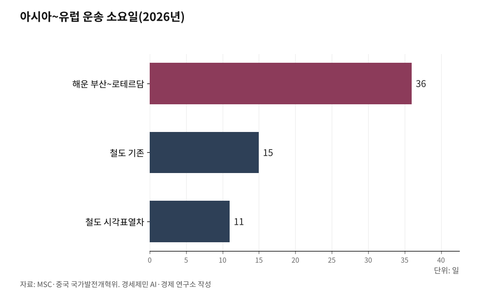

[환황해 철도망②] 뱃길보다 14일 빠르고 운임은 세 배, 시간을 사는 화물의 대륙철도
인천~베이징 비행기 2시간25분, 북측 경의선 열차는 시속 30~50km(2018년)
2013년 부산~함부르크 철도 운임 컨테이너당 4600달러, 배의 세 배 값으로 산 14일
시각표대로 달리는 중국유럽화물열차, 컨테이너당 화물가치는 보통 열차의 1.41배
인천에서 베이징까지 비행기는 2시간25분이면 닿는다. 이 거리에서 사람을 나르는 일은 철도가 비행기를 못 이긴다. 짐은 다르다. 2013년 부산에서 함부르크까지 컨테이너는 철길로 27일, 뱃길로 41일 걸렸다. 철도 운임은 배의 세 배였다. 그 값을 내고도 시간을 사려는 짐이 대륙철도의 손님이다.

1. 사람은 비행기로 2시간25분, 북녘 철길은 시속 30km
여객에서는 답이 이미 나와 있다. 대한항공 KE851편은 10월 시각표로 인천에서 베이징 서우두공항까지 2시간25분을 난다. 베이징~평양 국제열차만 해도 꼬박 하루를 달린다. 열차가 같은 시간과 값으로 이 손님을 데려올 길은 없다.
북녘 철길 사정은 더 나쁘다. 남북철도공동조사단은 2018년 11월 30일부터 12월 17일까지 북측 경의선과 동해선을 조사했다. 개성~신의주 413.9km 경의선에서 개성~평양 구간 열차는 시속 30km로 달렸다. 평양~신의주 구간도 시속 50km 안팎이었다.
통일부가 2019년 3월 국회에 낸 결과보고서를 보면 개성~사리원 구간은 시속 10~20km에 그쳤다. 나무 침목은 썩었고 레일은 닳았다. 놓을 때 두 가닥(복선)이던 철길은 낡아서 대부분 한 가닥(단선)으로만 다녔다.
가장 빠른 시속 50km로 쉬지 않고 달려도 개성에서 신의주까지 8시간이 넘는다. 그나마 상태가 괜찮은 곳은 평양 이북이었다. 평양과 중국 단둥을 오가는 국제열차와 화물열차가 다니는 구간이다. 사람을 나르는 셈으로는 대륙철도를 놓을 까닭이 서지 않는다.

2. 희망봉과 수에즈 사이에서 흔들리는 뱃길
짐을 실은 배의 날수는 해마다 달라진다. 예멘 후티 반군은 2023년 11월부터 홍해를 지나는 배를 공격했다. 국제 해운단체 BIMCO 집계로 2025년 수에즈운하를 지난 배의 양은 2023년보다 57~64% 적었다. 그해 4분기 수에즈를 지난 컨테이너선은 2023년보다 86% 적었다.
배들은 남아프리카의 희망봉을 돌았다. 스위스 선사 MSC의 2026년 북유럽 운항표가 그 길이다. 실크(SILK) 서비스로 부산에서 네덜란드 로테르담까지 36일, 함부르크까지 43일이 걸린다. 운항표 표지에는 희망봉 경유라고 적혀 있다.
올해는 호르무즈 해협도 흔들렸다. 2월 말 미국·이스라엘과 이란의 전쟁이 터진 뒤 해협에서 상선 피격이 이어진다. 영국해사무역기구(UKMTO)는 10월 13일에도 유조선과 컨테이너선이 정체불명의 발사체에 맞았다고 확인했다. 바닷길 위험은 아직 걷히지 않았다.
9월 들어 컨테이너선의 수에즈 복귀가 본격화했다. 덴마크 해운조사기관 시인텔리전스 집계로 9월 아시아~유럽 컨테이너선의 27%가 홍해와 수에즈를 지났다. 8월에는 20%였다. 뱃길의 날수는 전쟁과 휴전을 따라 늘고 준다.
3. 같은 잣대로 잰 부산~함부르크 철길과 뱃길
뱃길과 철길을 견주려면 떠나는 곳과 닿는 곳을 맞춰야 한다. 조진행 교수는 2016년 학술지 「해운물류연구」에 그 비교를 실었다. 부산항에서 유럽 도시까지 시베리아횡단철도(TSR) 경로와 바닷길을 세 시점으로 견줬다. 날수와 운임을 함께 따졌다.
2013년 부산~함부르크는 철길로 27일, 뱃길로 41일 걸렸다. 철길이 14일 빨랐다. 운임은 거꾸로였다. 20피트 컨테이너 하나에 철도는 4600달러, 배는 1500달러를 받았다. MSC의 2026년 희망봉 경유 운항표로도 부산~함부르크는 43일이다.
모스크바행은 흐름이 더 또렷하다. 철길은 1998년 30일에서 2013년 22일로 줄었다. 철도 시설에 돈을 들인 덕이다. 뱃길은 같은 기간 37일에서 50일로 늘었다. 수지를 맞추려고 배가 느리게 다닌 탓이다.
운임 흐름은 반대였다. 철도는 2300달러에서 3600달러로 올랐다. 배는 3500달러에서 2400달러로 내렸다. 논문은 철도가 시간으로, 배가 값으로 겨뤄 왔다고 풀이했다. 철도에 맞는 짐은 며칠을 당겨 얻는 값이 운임 차이보다 큰 물건이다.
4. 비싼 짐이 모이는 중국유럽화물열차
중국과 유럽을 잇는 화물열차가 그런 짐을 보여 준다. 2026년 5월 중국국가철로그룹 자료를 보면 이 열차는 53개 부문 5만여 종의 물건을 나른다. 중국에서 나가는 주력은 자동차와 부품, 기계설비, 전자·전기 제품이다. 유럽에서는 목재와 펄프, 특산 농산물, 생활 소비재가 들어온다.
출발과 도착 시각을 미리 정한 전 구간 시각표 열차도 생겼다. 중국 도시 9곳과 유럽 도시 6곳 사이를 주 22편 달린다. 2026년 4월 말까지 1700편을 넘겼다. 이 열차의 컨테이너 한 칸당 평균 화물가치는 같은 길의 보통 열차보다 41% 높다.
중국 국가발전개혁위원회는 7월 28일 시안~뒤스부르크가 15일에서 가장 빠르면 11일로 줄었다고 밝혔다. 이 11일은 중국 내륙에서 떠나는 날수다. 한국 짐이 이 열차를 타려면 먼저 바다를 건너 중국 철도역까지 가야 한다. 뱃길 36일과 바로 견줄 숫자가 아니다.
값도 내렸다. 국내외 운송 가격은 운행 초기보다 40% 넘게 떨어졌다. 2026년 1~7월 운행은 1만2988편으로 1년 전보다 17.6% 늘었다. 돌아오는 길에 다른 짐도 실을 수 있는 범용 자동차 컨테이너도 새로 들였다. 시각표를 지키는 열차에 값비싼 짐이 실린다.
5. 도라산역에서 멈춘 한국 화물의 길
한국이 내보내는 물건도 성질이 같다. 산업통상부 발표를 보면 2025년 수출은 7097억달러로 처음 7000억달러를 넘었다. 유럽연합(EU)으로는 역대 가장 많은 701억달러어치가 나갔다. 양대 품목은 자동차와 선박이고 일반기계가 3위, 반도체가 6위였다.
2025년 자동차 수출은 720억달러로 역대 최대였다. 관세 탓에 미국행은 줄었지만 EU와 독립국가연합(CIS)행이 늘었다. 선박은 철도에 실을 수 없다. 자동차와 부품, 일반기계, 반도체는 중국유럽화물열차가 지금 나르는 짐과 같은 갈래다.
화주는 시간만 보지 않는다. 최윤호·김대양·이충배 연구진은 2025년 유럽 내륙국가로 가는 컨테이너 수출 경로를 분석했다. 전문가들은 경로를 고를 때 운송비용을 가장 무겁게 따졌다. 이 연구는 유럽 항만을 거치는 경로를 다뤘다. 값을 먼저 따지는 화주의 셈법은 철길 앞에서도 다르지 않다.
철길도 늘 제때 닿지는 않는다. 3월 이후 중국에서 러시아·중앙아시아로 가는 철도 화물의 출발이 밀렸다. 한 국제물류주선업체는 10월 2일 보도에서 화물에 따라 50~60일이 걸린다고 했다. 시각표를 지키는 힘이 철도 경쟁력의 바탕이다.
도라산역 안내판은 평양방면을 가리킨다. 한국 짐이 그 길에 오르려면 항만과 산업단지에서 시작하는 화물 철길이 먼저 있어야 한다. 시각표대로 닿는 화물 운행도 갖춰야 한다. 대륙철도의 본질은 여객이 아니라 화물이다.
※ 이 기사는 AI 프로그램 클로드를 활용해 작성했습니다.
참고문헌
공식 발표자료와 공공기록
· 산업통상부, "2025년 연간 및 12월 수출입 동향:역대 최대 수출액 경신(7,097억 달러) 및 무역수지 780억 달러 흑자 달성", 2026.1.1.(쉬핑뉴스넷 원문 전재), https://www.shippingnewsnet.com/news/articleView.html?idxno=68435
· MSC, "Asia - North Europe 2026 Network via Cape of Good Hope"(서비스 안내서), 2026., https://assets.msc.com/api/public/content/8dee330a154d47c581a45f3c9f9be8f8?v=a6f6cadc
· 중국국가철로그룹(중국중앙텔레비전 郑连凯 보도, 중국과기망 전재), "中欧班列开行突破13万列 发送货值超5200亿美元", 2026.5.9., https://www.stdaily.com/web/gdxw/2026-05/09/content_514025.html
· 신화통신 何晓·魏玉坤(국가발전개혁위원회 발표), "中欧班列累计开行量突破13万列", 新华网, 2026.7.28., https://www.news.cn/world/20260728/74d1402bb23049d8b4a267a04ae179fc/c.html
· 중국국가철로그룹(과기일보 何亮 보도), "1至7月份国家铁路发送货物23.5亿吨", 2026.8.19., https://www.stdaily.com/web/gdxw/2026-08/19/content_566309.html
연구보고서와 논문
· 조진행, "유라시아 鐵道經路와 國際海運經路의 時系列的 競爭力에 關한 硏究(A Competitive Analysis of the Trans-Siberian Railway and All Water Transport Routes)", 해운물류연구, 제32권 제1호(통권 89호), 2016.3., 29-47쪽, https://www.kci.go.kr/kciportal/ci/sereArticleSearch/ciSereArtiView.kci?sereArticleSearchBean.artiId=ART002091773
· 최윤호·김대양·이충배, "한-유럽 내륙국가간 복합운송경로 선택의 결정요인에 관한 연구(The Determinants of Multimodal Transport Route Selection between Korea and Land-locked Countries in Europe)", 한국항만경제학회지, 제41집 제3호, 2025.9., 183-197쪽, https://www.kci.go.kr/kciportal/ci/sereArticleSearch/ciSereArtiView.kci?sereArticleSearchBean.artiId=ART003255032
언론 보도
· 조정훈, "110년 된 교량 달리는 북 열차, 노후화 심각", 통일뉴스, 2019.3.29., https://www.tongilnews.com/news/articleView.html?idxno=128274
· 김지훈, "北 철도, 100년 된 교량 그대로…'대부분 구간 노후화 심각'", 뉴시스, 2019.3.29., https://www.newsis.com/view/NISX20190329_0000604120
· 해운산업팀, "후티 공격 중단 선언에도 수에즈 운하 통항 회복 지연…2026년 초에도 여전히 60% 감소", 해사신문, 2026.1.8., http://www.haesanews.com/news/articleView.html?idxno=144845
· 해운산업팀, "미군 '호르무즈 해협 통제권은 미국에'…이란과 군사적 긴장 고조", 해사신문, 2026.10.14., http://www.haesanews.com/news/articleView.html?idxno=151849
· 박한솔, "북방물류도 중동전쟁 영향권…철송 적체에 운임 상승곡선", 코리아쉬핑가제트, 2026.10.2., https://www.ksg.co.kr/news/main_newsView.jsp?pNum=148119
· 최성훈, "컨선사들 수에즈운하 복귀 본격화…유럽항로 운임 하락일로", 코리아쉬핑가제트, 2026.10.14., https://www.ksg.co.kr/news/main_newsView.jsp?pNum=148221
· 박정규·임철휘, "북·중 승객 태우고 출발…평양행 전용 2개차량은 긴장(종합)", 뉴시스, 2026.3.12., https://www.newsis.com/view/NISX20260312_0003546368
· 李心萍, "三个关键词读懂中欧班列新变化", 人民日报(新华网 전재), 2025.12.1., https://www.news.cn/fortune/20251201/a421a34727084c538f32e0ce8bfa374c/c.html
· Trip.com(VariFlight 자료), "KE851 Korean Air Flight Status Live", 2026.10.14. 확인, https://us.trip.com/flights/status-ke851/
사진 출처
· [사진1] byeangel, "HL7531 - Korean Air Lines - Boeing 777-2B5(ER) - ICN (17082230177).jpg", 위키미디어 공용, CC BY-SA 2.0, https://commons.wikimedia.org/wiki/File:HL7531_-_Korean_Air_Lines_-_Boeing_777-2B5(ER)_-_ICN_(17082230177).jpg
· [사진2] Coordenação-Geral de Observação da Terra/INPE, "Canal de Suez, Egito.jpg", 위키미디어 공용, CC BY-SA 2.0, https://commons.wikimedia.org/wiki/File:Canal_de_Suez,_Egito.jpg
· [사진3] Spielvogel, "APM Terminal Maasvlakte Rotterdam.jpg", 위키미디어 공용, CC BY-SA 4.0, https://commons.wikimedia.org/wiki/File:APM_Terminal_Maasvlakte_Rotterdam.jpg
· [사진4] Isiwal, "Captrain 193 784-6 Ybbs an der Donau-8118.jpg", 위키미디어 공용, CC BY-SA 4.0, https://commons.wikimedia.org/wiki/File:Captrain_193_784-6_Ybbs_an_der_Donau-8118.jpg
· [사진5] Christian140, "Dorasan Station - To Pyongyang.jpg", 위키미디어 공용, CC BY-SA 4.0, https://commons.wikimedia.org/wiki/File:Dorasan_Station_-_To_Pyongyang.jpg
※ 이 기사는 인공지능을 활용해 작성했습니다.
관련기사
- [환황해 철도망③] 중국 항만에서 대륙철도 타는 한국 화물, 인천 씨앤레일 3만286TEU
- [환황해 철도망①] 6년 만에 달린 평양~베이징 열차, 유럽행 한국 화물은 최단 36일 뱃길
- [환황해 철도망④] 인천항 연안 컨테이너 3년째 0TEU, 끊긴 국내 컨테이너 뱃길
- [환황해 철도망⑤] 북한 교역액의 98.2%는 중국, 국경을 넘는 철길 문은 넷
저작권자 © AI경세제민 무단전재 및 재배포, AI학습 및 활용 금지